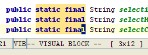

This NetBeans screenshot shows a visual block mode selection. Notice that the status bar displays both jVi's current mode and the dimensions of the block mode selection. The cursor is in the lower right corner of the selected block. It can be moved around with the arrow keys to extend and shrink the selection. There are commands to shift the cursor to other corners.
|
o lower case, moves cursor to opposite corner |
O upper case, moves cursor to other end of line |
end result of entering oO |
0123456789 0123456789 0123456789 0123456789 0123456789 |
0123456789 0123456789 0123456789 0123456789 0123456789 |
0123456789 0123456789 0123456789 0123456789 0123456789 |
When there are TABS in the selection, the display may not look correct, however the commands behave correctly.
By default the delete, yank and put commands operate on an internal buffer. To use them with the clipboard, prepend the command with "*. For example, "*d deletes the block and places the text in the clipboard. (the double quote is part of the command).
When jvi (vim) puts block mode data into a buffer, the d and y commands, it marks that buffer as containing block mode data. The P command behaves differently if the buffer does not contain block mode data.
The following examples all assume the buffer has block mode data. The last examples show advanced command features in action.
If there are TABS in the selection, they are "split" as needed to square things up.
| Selection |
Command | Result | Buffer |
0123456789 0123456789 0123456789 0123456789 0123456789 |
x or d delete |
0123456789 |
2345 |
0123456789 0123456789 0123456789 0123456789 0123456789 |
y yank |
0123456789 |
2345 |
01234 01234 01234 01234 01234 |
P uppercase put before cursor, from buffer |
01234 |
--no change |
01234 01234 01234 01234 01234 |
p lowercase put after cursor, from buffer |
01234 |
--no change |
|
In next, buffer first provides the source data,
then it is replaced by what was deleted. |
|||
01234567 01234567 01234567 01234567 01234567 |
P or p replace selected from buffer |
01234567 |
after234 |
0123456789 0123456789 0123456789 0123456789 0123456789 |
rx replace all with char |
0123456789 |
no change |
0123456789 0123456789 0123456789 0123456789 0123456789 |
c-+*<ESC> change each line selection to user text |
0123456789 |
no change |
aBcDeFgHiJ aBcDeFgHiJ aBcDeFgHiJ aBcDeFgHiJ aBcDeFgHiJ |
U Uppercase |
aBcDeFgHiJ |
no change |
aBcDeFgHiJ aBcDeFgHiJ aBcDeFgHiJ aBcDeFgHiJ aBcDeFgHiJ |
u Lowercase |
aBcDeFgHiJ |
no change |
01234 01234 01234 01234 01234 |
I#*<ESC> insert before block |
01234 |
no change |
01234 01234 01234 01234 01234 |
A*#<ESC> append after block |
01234 |
no change |
| Notice that the behavior of I and A are different when short lines are included in the selection. This is intentional so that both types of behavior are available. | |||
01234 01234 0 0 01234 01234 |
I+=<ESC> insert before block |
01234 |
no change |
|
I, insert, does not affect short lines (above). A, append, modifies short lines (below). |
|||
01234 01234 0 0 01234 01234 |
A++<ESC> append after block |
01234 |
no change |
| The following example shows how p, the put command, inserts blanks after short lines to complete a put. The $ in the example command move the cursor to the end of the line. | |||
01234 01234 0 0 01234 01234 |
y$p put extends short lines if needed |
01234 |
012 |
| Here is an example using a count with the put command. The buffer contents are shown before the command is exectued. | |||
0123 0123 0123 0123 0123 |
3p tile three copies of buffer |
0123 |
abno change |